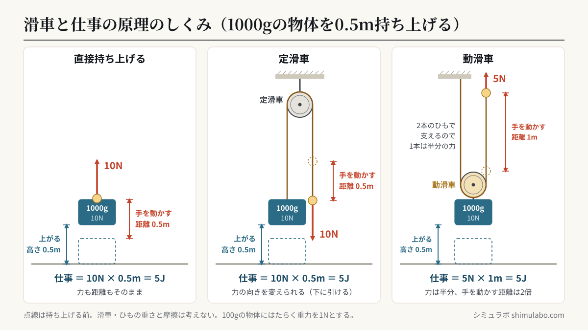
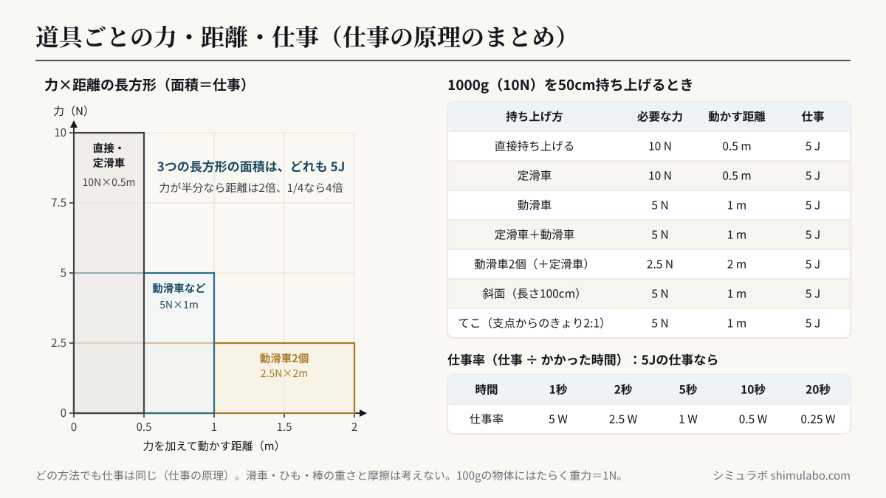

このシミュレーションでわかること
ポイント：定滑車・動滑車・斜面・てこなどの道具を使うと、物体を持ち上げるのに必要な力を小さくできますが、そのぶん力を加えて動かす距離が長くなり、仕事（力×距離）の大きさは道具を使わないときと変わりません。これを仕事の原理といいます。
中学校3年の理科「運動とエネルギー」の（ｳ）力学的エネルギー ㋐仕事とエネルギー（学習指導要領 第1分野（5）ア（ｳ））で学ぶ内容です。学習指導要領の内容の取扱いでは「仕事の原理にも触れること」とされています。
物体の質量と持ち上げる高さを決め、「直接持ち上げる／定滑車／動滑車／定滑車＋動滑車／動滑車2個／斜面／てこ」を切りかえると、必要な力・力を加えて動かす距離・仕事（J）が表に並びます。持ち上げるのにかかった時間を決めると、仕事率（W）も計算されます。
授業での使い方
- 導入：「重い物を楽に持ち上げるには、どんな道具を使えばよいかな？」と問いかけ、動滑車を選んで、必要な力が半分になることを見せます。
- 展開：ばねばかりと滑車を使った実験の前後に使います。表の「必要な力」と「距離」をかけ算すると、どの方法でも同じ値になることに気づかせます。右側の長方形（たて＝力、横＝距離）の面積が仕事で、形が変わっても面積は同じです。図を指でドラッグすると、手を動かした長さと物体が上がった高さを比べられます。
- まとめ：かかった時間を変えて、同じ仕事でも短い時間でするほど仕事率が大きいことを確かめます。
生徒への問いの例：
- 動滑車を使うと、ひもを引く力は半分になります。では、ひもを引く距離はどうなるでしょう。
- 定滑車を使っても力の大きさは変わりません。それでも定滑車を使うのはなぜでしょう。
- 同じ物体を、Aさんは5秒、Bさんは10秒かけて同じ高さまで持ち上げました。仕事と仕事率をそれぞれ比べましょう。
しくみ・解説






図はタップすると大きく表示されます。授業のプリント・スライド・板書計画に自由に使えます（出典「シミュラボ」とページのURLを添えてください）。
用語の意味
- 仕事とは、物体に力を加えてその力の向きに物体を動かしたときの「力の大きさ × 力の向きに動かした距離」で、単位はジュール（J）です。
- 仕事の原理とは、道具を使っても使わなくても、同じ状態にするための仕事の大きさは変わらないという原理です。
- 仕事率とは、1秒間あたりにする仕事の大きさで、単位はワット（W）です。
- 定滑車とは、天井などに固定されて回るだけの滑車で、力の向きを変えられますが、力の大きさは変わりません。
- 動滑車とは、物体といっしょに動く滑車で、2本のひもで物体を支えるので、ひもを引く力は半分になりますが、引く距離は2倍になります。
仕事（J）＝ 力の大きさ（N）× 力の向きに動かした距離（m）
仕事率（W）＝ 仕事（J）÷ かかった時間（s）
物体を持ち上げる仕事 ＝ 物体にはたらく重力（N）× 持ち上げる高さ（m）
100gの物体にはたらく重力の大きさ ＝ 1N（教科書の約束。正確には約0.98N）
仕事率（W）＝ 仕事（J）÷ かかった時間（s）
物体を持ち上げる仕事 ＝ 物体にはたらく重力（N）× 持ち上げる高さ（m）
100gの物体にはたらく重力の大きさ ＝ 1N（教科書の約束。正確には約0.98N）
道具ごとの力・距離・仕事（早見表）
1000g（重力10N）の物体を50cm（0.5m）持ち上げるときの値です（滑車・ひも・棒の質量と摩擦は考えません）。
| 持ち上げ方 | 必要な力 | 力を加えて動かす距離 | 仕事（力×距離） | ポイント |
|---|---|---|---|---|
| 直接持ち上げる | 10 N | 0.5 m | 5 J | — |
| 定滑車 | 10 N | 0.5 m | 5 J | 力の向きを変えられる（下に引ける） |
| 動滑車 | 5 N | 1 m | 5 J | 2本のひもで支えるので力は半分 |
| 定滑車＋動滑車 | 5 N | 1 m | 5 J | 力は半分で、下向きに引ける |
| 動滑車2個（＋定滑車） | 2.5 N | 2 m | 5 J | 力は1/4、引く距離は4倍 |
| 斜面（長さ100cm） | 5 N | 1 m | 5 J | 力 ＝ 重力 × 高さ ÷ 斜面の長さ |
| てこ（支点からのきょり 2:1） | 5 N | 1 m | 5 J | 力点を支点から遠くする |
どの方法でも、仕事は 10N × 0.5m ＝ 5J になります。力が半分なら距離は2倍、力が1/4なら距離は4倍と、力と距離は反比例の関係になっています。斜面では「力 × 斜面の長さ ＝ 重力 × 高さ」、てこでは「支点から力点までのきょり ÷ 支点から作用点までのきょり」の倍だけ力が小さくなり、そのぶん大きく動かす必要があります。
仕事率の早見表
| かかった時間 | 仕事 | 仕事率（仕事÷時間） |
|---|---|---|
| 1秒 | 5 J | 5 W |
| 2秒 | 5 J | 2.5 W |
| 5秒 | 5 J | 1 W |
| 10秒 | 5 J | 0.5 W |
| 20秒 | 5 J | 0.25 W |
計算問題の解き方
例：質量2kgの物体を、動滑車を使って1.5mの高さまで、6秒かけて引き上げました。100gの物体にはたらく重力の大きさを1Nとします。
- 物体にはたらく重力：2kg＝2000g なので 20N
- 動滑車なので、ひもを引く力は 20 ÷ 2 ＝ 10N、ひもを引く距離は 1.5 × 2 ＝ 3m
- 仕事：10N × 3m ＝ 30J（直接持ち上げても 20N × 1.5m ＝ 30J で同じ）
- 仕事率：30J ÷ 6秒 ＝ 5W
このシミュレーションで単純にしていること
- 滑車・ひも・てこの棒の質量と、滑車の軸・斜面の摩擦は考えていません。実際の実験では、動滑車の重さや摩擦のぶん、ひもを引く力が少し大きくなり、道具を使ったほうが仕事は少し大きくなります。
- 物体はゆっくり一定の速さで持ち上げるものとし、力の大きさは物体を支えてつり合うときの値です。
- 100gの物体にはたらく重力の大きさを1Nとして計算しています（中学校の教科書と同じ約束）。
- 図の大きさ（滑車の位置や動く長さ）は見やすいように変えた模式図です。正しい数値は右側と下の表を見てください。
参考
- 文部科学省「中学校学習指導要領（平成29年告示）解説 理科編」第1分野（5）運動とエネルギー（ｳ）力学的エネルギー ㋐仕事とエネルギー（pp.56〜57）（文部科学省 中学校学習指導要領解説のページ）
- 中学校理科の教科書（東京書籍「新しい科学」、啓林館「未来へひろがるサイエンス」、大日本図書「理科の世界」など）3年「運動とエネルギー」の仕事の単元
引用・転載について
本ページのシミュレーション結果・数値は、出典を明記いただければブログ・ニュース記事・SNS・授業や社内資料への引用を歓迎します。事前連絡は不要です。
推奨クレジット表記：
出典：シミュラボ「滑車と仕事の原理シミュレーター（仕事・仕事率）」 https://shimulabo.com/sims/kassha-shigoto/よくある質問
- 仕事の原理とは何ですか？
- 道具を使っても使わなくても、物体を同じ状態にするための仕事の大きさは変わらないという原理です。動滑車や斜面・てこを使うと必要な力は小さくなりますが、そのぶん力を加えて動かす距離が長くなるので、力×距離の仕事は同じになります。
- 動滑車を使うと、なぜ力が半分になるのですか？
- 動滑車は物体といっしょに動き、物体を左右2本のひもで支えるからです。1本のひもにかかる力は重力の半分になります。そのかわり、物体を1m上げるには左右のひもを1mずつ、合わせて2m引く必要があります。
- 定滑車を使うと、どんな良いことがありますか？
- 力の大きさは変わりませんが、力の向きを変えられます。物体を上に持ち上げるのに、ひもを下向きに引けばよいので、自分の体重も使えて作業しやすくなります。
- 仕事率はどうやって求めますか？ 単位は何ですか？
- 仕事率（W）＝ 仕事（J）÷ かかった時間（秒）で求め、単位はワット（W）です。1Wは1秒間に1Jの仕事をする仕事率です。同じ仕事でも、短い時間でするほど仕事率は大きくなります。
- 物体を持ったまま水平に歩くと、仕事をしたことになりますか？
- 理科でいう仕事は0です。物体を支える力は上向きですが、物体は水平に動いていて、力の向きには動いていないからです。仕事は「力の向きに動いた距離」で計算します。
- 100gの物体にはたらく重力が1Nなのはなぜですか？
- 中学校の教科書では、計算しやすいように「100gの物体にはたらく重力の大きさを1N」とする約束で問題を解きます。正確には、100gの物体にはたらく重力は約0.98N（0.1kg×9.8m/s²）です。